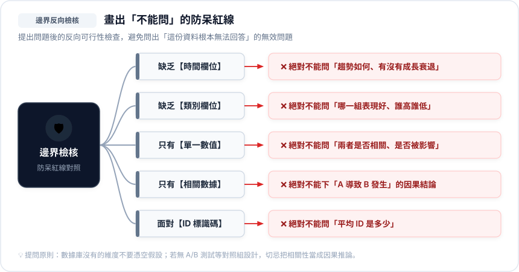

🏷️ 步驟 1：欄位角色貼標籤
認識數據積木
拿到任何 Excel 或 CSV 檔時，先不要急著看數字大小，而是把每一欄貼上以下三種角色標籤之一：
🟢 指標 (Metric)
連續數值型資料，可以進行加總、平均、計算差距與成長率。
典型欄位：採購金額、加班工時、營收、滿意度分數
🎯 核心角色：
「我想衡量的結果是什麼」
🔵 條件 (Dimension)
類別型或時間型資料，用來切分、分群、排先後順序的維度。
典型欄位：部門名稱、產品類別、地區、成交日期
🎯 核心角色：
「在什麼情況 / 誰的身上發生」
⚪ 標識 (Identifier)
每一筆獨一無二的識別號碼，不具備數值分析含義。
典型欄位：員工工號、採購單號、身分證字號、會員編號
🎯 核心角色：
「算筆數專用，不可做數學運算」
🎮 職場新手防呆實戰：下列欄位該貼什麼標籤？
點擊下方按鈕測試你的辨識敏銳度，留意「數字長相但不是數值」的經典陷阱：
員工工號 (如: 10023)
雖然內容全為數字，但有加總或平均的意義嗎？
加班工時 (如: 14.5 小時)
帶有明確測量單位（小時），能夠進行統計運算。
客戶滿意度 (如: 極滿意/滿意)
文字選項或等級分級，用來區分受訪者態度。
🧱 步驟 2：提問公式積木組合器
5 大公式句型切換
貼完標籤後，依你想了解的角度挑選 1 ~ 3 個欄位，直接套用提問積木句型：
🎯 核心思考方向
探索指標的「總體常態與極端狀況」。
🗣️ 標準提問句型模板：
💡 推薦分析運算指標：平均數 (Mean)、中位數 (Median)、標準差、離群極值 (Min/Max)。
🏢 辦公室情境範例
單一數值
挑選欄位：`訂單金額` (數值)
💬 範例提問問句：
「這批訂單平均金額是多少？中位數是多少？是否有高得離譜的大單拉高了平均？」
示意資料，僅用來認識圖表；不是上方 Colab 資料的分析結果。
推薦搭配圖表：直方圖 (Histogram) 或 箱形圖 (Box Plot)
🛡️ 步驟 3：邊界反向檢核（防呆紅線診斷）
畫出不能問的紅線
問完問題後，最後一步是做可行性檢查。避免提出「這份資料根本無法回答」的無效問題：

📋 實戰演練：辦公室採購明細.csv
自由勾選欄位體驗
假設你手邊有以下這張真實辦公室資料表。請隨意勾選 1~3 個欄位，系統將即時診斷出你匹配到的提問積木，並自動產生優質提問與防呆紅線！
| 採購單號 (ID) | 採購日期 (時間) | 申請部門 (類別) | 採購類別 (類別) | 採購金額 (數值) |
|---|---|---|---|---|
PO-2025-001 |
2025/03/15 | 行銷部 | 辦公耗材 | $4,500 |
PO-2025-002 |
2025/03/18 | 研發部 | 硬體設備 | $85,000 |
PO-2025-003 |
2025/03/20 | 行政部 | 軟體訂閱 | $12,000 |
PO-2025-004 |
2025/04/02 | 研發部 | 軟體訂閱 | $28,000 |
👇 勾選你想挑選分析的欄位（可多選）：
💡 提示：隨意組合不同欄位，觀察右側提問角度如何動態演變！
🤖 AI 萬用提問 Prompt 產生器
一鍵複製到 AI
學會這套思考規則後，你也可以直接把你的欄位屬性填在下方，一鍵生成結構嚴謹的「提問 Prompt」，交給 ChatGPT、Claude 或 Gemini 產出專屬商業問題清單！
快速帶入情境範例：
即時生成 Prompt 預覽
Markdown 格式